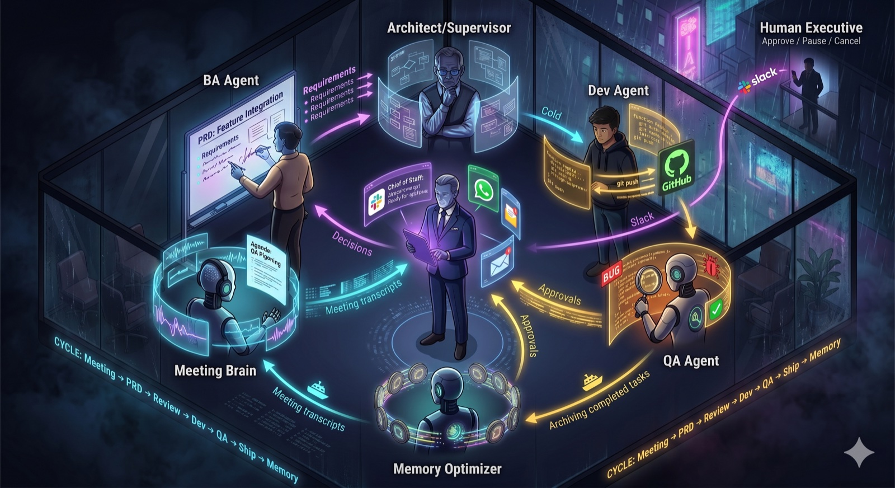

Meeting Brain
Live capture, transcript ingestion, requirement extraction.
Vexa (BYO) · Whisper · Manual uploadOpen source · Self-hosted · BYOK
Six specialized agents — Meeting Brain, BA, Architect/Supervisor, Dev, QA, Memory Optimizer — coordinated by a Chief of Staff who reports to you over Slack, WhatsApp, or email. You approve. They execute. The cycle closes itself.
docker compose up to run it

Most teams spend more time translating decisions into work than delivering outcomes.
Notes, tickets, and handoffs lose critical nuance across teams.
Meetings, docs, code, and delivery live in separate silos without automation.
Most "AI tools" listen but never clarify, decide, or take action.
Every step has a responsible agent. Every decision needs a human ack. Memory closes the loop.
Meeting Brain ingests transcripts (live capture or upload) and extracts requirements.
BA Agent drafts a PRD with acceptance criteria, risks, and open questions.
Architect/Supervisor critiques the PRD against tenant memory and prior decisions.
Dev Agent implements, runs tests, and opens a PR on GitHub.
QA Agent reviews the diff for regressions, bugs, and policy violations.
Chief of Staff requests your approval over Slack/WhatsApp/Email; you Approve, Pause, or Cancel.
Memory Optimizer archives the completed cycle so the next one is smarter.
Each agent has a single job and a clear handoff. Human Executive approves at every gate.
Live capture, transcript ingestion, requirement extraction.
Vexa (BYO) · Whisper · Manual uploadDrafts PRDs with acceptance criteria, risks, and clarifying questions.
Multi-model critique · Memory-awareCross-checks the PRD against tenant decisions and architectural standards.
AI Council · Loop-guardedImplements features, writes tests, opens PRs.
GitHub · Local CLI · SandboxReviews diffs for regressions, bugs, and policy violations.
Explicit-CoT reviewer (e.g. o3)Comms hub. Routes approvals, status, and exceptions to the right human.
Slack · WhatsApp · EmailArchives completed work so future cycles inherit context.
Per-tenant memory · EmbeddingsYou. Approve · Pause · Cancel via Slack.
Always in the loopOne docker compose up starts local LLMs and local transcription. Live meeting capture is BYO — point at your own self-hosted Vexa endpoint, or skip live capture and upload recordings manually. BYOK keys (Anthropic, OpenAI, Google) work alongside as fallbacks.
Ollama + Qwen 3.5 (8B/32B) and Mistral Small 3 (24B). Pick a tier in the wizard; it reads your hardware.
faster-whisper-server — meeting transcripts never leave your network.
Apache 2.0 meeting bot — joins Google Meet/Zoom/Teams. Run Vexa yourself and point VEXA_API_URL at it; audio stays on your infra.
Every agent role has a primary, optional reviewers, and a fallback chain ending in local Ollama. No single point of failure.
Termination guards
council.session_complete telemetry tunable, observable
BYOK across Anthropic, OpenAI, and Google. Local fallback ensures the cycle survives any single provider outage.
Add Anthropic / OpenAI / Google keys via the wizard. None required if you only want local models.
Step 0 runs entirely on your hardware. No external AI service required for a working install.
Every council session, every approval, every code change is logged with structured telemetry.
Apache 2.0. Self-hosted. git clone, docker compose up, walk the wizard.